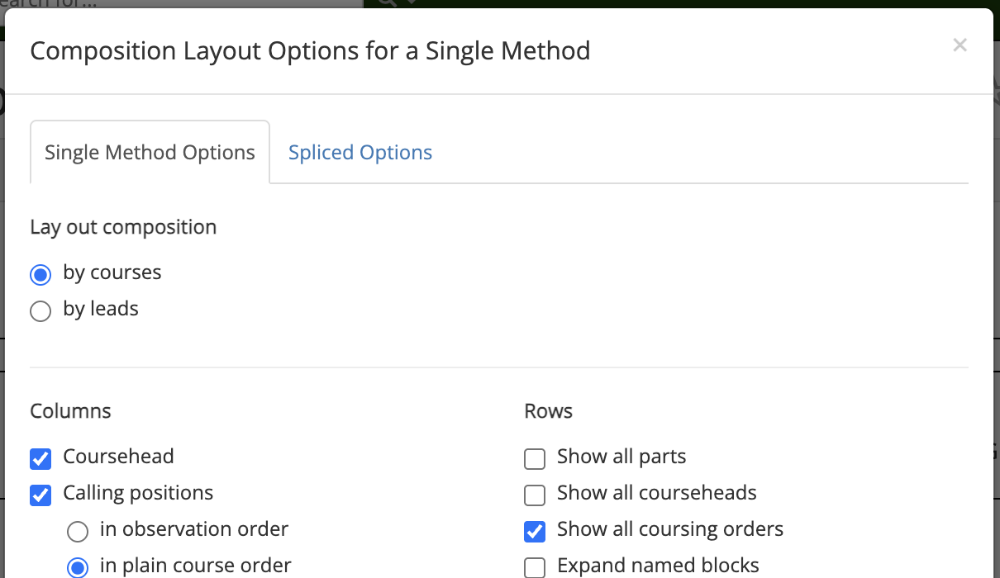
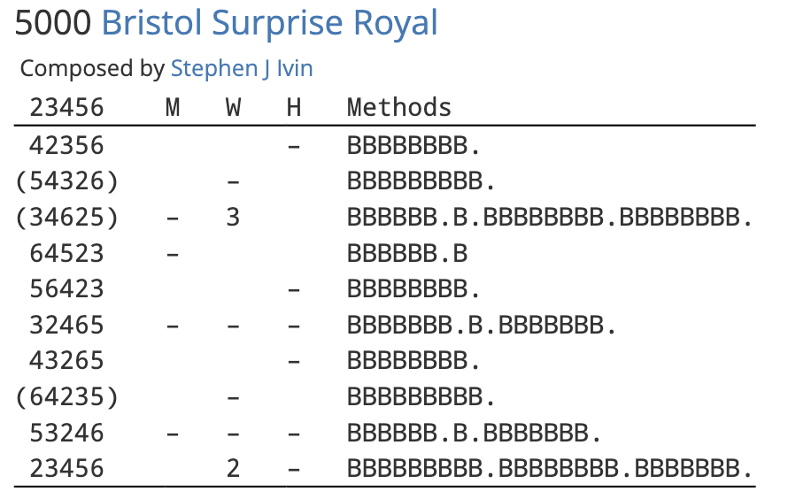

Customising composition layouts
The composition layout options menu can be accessed by clicking the  cog button at the top right of a composition page's Layout tab.
cog button at the top right of a composition page's Layout tab.
This opens a window which allows you to customise the appearance of composition layouts across the whole Composition Library.

Once you have selected the layout options you want, click Save changes to save your changes and close the options menu. Your new layout options will be reflected in the Layout tab. Clicking Close or the cross in the upper right will close the window without saving your changes.
Note
Compositions layouts for single-method and spliced compositions are configured separately. If you are not seeing changes you make reflected in the layout of a composition, check that you are configuring the correct composition type.
To restore Complib's default layout, click Default settings, then Save changes.
The following sections outline the different customisation options. Certain options may only be applicable to single-method or spliced compositions.
Lay out composition by ...
There are two main formats which compositions typically use. These derive from the main ways in which compositions have historically been notated.
- By courses
- In this format, courses are given in separate rows, and calls are listed in columns which specify calling positions.
- By leads
- In this format, the number of leads between each call are listed in a column. Additional columns give information such as the call types, calling positions, and the leadheads which result from each call.
In the following sections, layout options which are specific to one of these formats will be noted.
Columns
- Coursehead / Leadhead
- Displays a column listing the courseheads or leadheads in the composition if laid out by courses/leads respectively.
- Calling positions (by courses)
-
Displays the calls in the composition in columns corresponding to their calling positions. If this option is deselected, calls will not be displayed. When this option is enabled, a number of secondary options will be visible. These allow you to choose the order in which the calling positions appear:
-
- In observation order
- The calling positions are listed in the order in which the observation bell reaches them (see calling positions for an explanation of observation bells).
-
- In plain course order
- The calling positions are listed in the order in which their resulting place bells appear in the plain course.
-
- In concise layout order
- The order of the calling positions will be chosen so as to minimise the number of rows in the layout.
Note
These secondary options are only available for single-method compositions. In Spliced compositions, the concise layout order is always used.
-
- Calls (by leads)
- Displays a column listing the calling position and call type of each call.
- Coursing order (by courses)
- Displays an additional table listing the coursing orders which result from each call.
- Method mnemonics
-
Displays an additional table listing the method mnemonic for each lead/division in the composition. There is one secondary option:
-
- Mid-lead finish in parentheses
- When selected, compositions which finish in the middle of a lead will display the mnemonic for that lead in (parentheses).
-
Hint: Method mnemonics in single-method compositions
A benefit of using method mnemonics in single-method compositions is that it gives a very simple indication of where the calls occur. In the below example, each lead of Bristol Surprise Royal is represented with a letter B. A full-stop after a lead in the mnemonic indicates a call at the end of that lead.

- Course lengths (by courses)
-
When selected, compositions in which calling positions correspond to a number of leads after the coursehead will display additional information about how many leads are in the course. Unchecking the option will disable the display.
-
- Auto
- The most common course length for the composition is designated the "standard" course length. Any course whose length differs from the standard length has its number of leads indicated in (parentheses).
-
- All
- Course lengths will be given for all courses.
-
Rows
- Show all parts
- By default, multipart compositions only show the calling for one part. When this option is selected, the subsequent parts will instead be fully expanded, and all notes regarding calling insertions/omissions/substitutions will be suppressed.
- Show all courseheads (by courses)
-
By default, compositions laid out by courses will compress consecutive calls into a single row to save space. Sometimes this means that not all courseheads rung in the composition are listed in the coursehead column. When this option is selected, calls will be expanded so that all courseheads are shown.
Warning
This option will still take effect even if the Columns > Coursehead option is deselected.
- Show all leadheads (by leads)
-
By default, compositions laid out by leads will only show the leadheads at which calls occur. When this option is selected, all leadheads rung in the composition will be listed. In addition, the lead number display will be disabled, and horizontal lines will be ruled underneath every coursehead.
Warning
If Columns > Leadheads is deselected, then leadheads will not be displayed even if this option is selected. However, horizontal lines will still be drawn between courses.
- Show all coursing orders (by courses)
- When selected, consecutive calls at the same position will be expanded in the coursing order display so that all coursing orders are shown. If Columns > Coursing orders is deselected, this option will have no effect.
- Expand named blocks
- When selected, all named blocks in the composition will be written out in full wherever they appear.
- Expand twin bobs
- When selected, prevents pairs of consecutive bobs at H, L, S and Q from being compressed in compositions of Stedman Triples.
- Expand turning courses
- When selected, prevents courses from being compressed into turning courses.
- Minimum turning course length (by courses)
- Specifies the minimum number of calls that must be present in a course for it to be considered a turning course. Has no effect if Rows > Expand turning courses is selected.